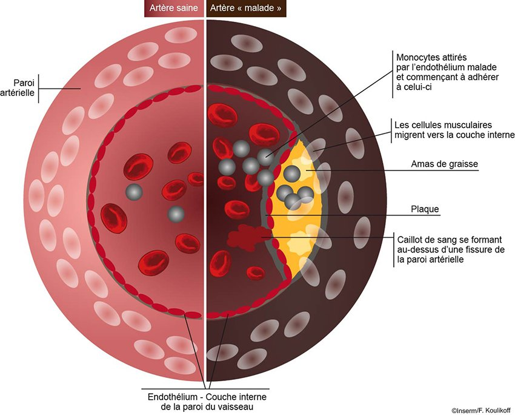

Rappels sur les Lipides
Rôle Physiologique du Cholestérol
Essentiel à l'organisme, le cholestérol est un constituant des membranes cellulaires et le précurseur de molécules vitales.
- Hormones stéroïdes
- Vitamine D
- Sels biliaires
Transport Sanguin
Les lipides sont transportés dans le sang par des lipoprotéines.
LDL ("Mauvais")
Transporte le cholestérol du foie vers les tissus. En excès, il se dépose dans les artères.
HDL ("Bon")
Ramène le cholestérol excédentaire des tissus vers le foie pour être éliminé.
Triglycérides (TG)
Transportés par les VLDL et les chylomicrons, ils constituent une réserve d'énergie.
Dyslipidémies et Risques
Une dyslipidémie est une anomalie du profil lipidique (LDL ↑, TG ↑, HDL ↓). L'excès de cholestérol mène à l'athérosclérose, un dépôt de plaques dans les artères augmentant le risque d'accidents cardiovasculaires.
AVC
Infarctus du Myocarde
Artériopathie
